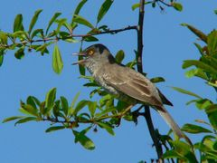
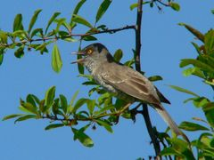

| Barred Warbler | |
|---|---|
|  | |
| Conservation status | |
| Binomial name | |
| Sylvia nisoria (Bechstein, 1792, central and northern Germany) |
| Barred Warbler | |
|---|---|
|  | |
| Conservation status | |
| Binomial name | |
| Sylvia nisoria (Bechstein, 1792, central and northern Germany) |
The Barred Warbler (Sylvia nisoria) is a common and widespread typical warbler which breeds throughout eastern Europe and across much of temperate Asia. Lately it has declined in some areas (including Germany), due to habitat loss because of intensified agriculture. This small passerine bird is strongly migratory, and winters in eastern Africa. It is regular on passage as far west as Great Britain & Ireland.
This is a large and robust species of typical warbler, 15.5–17 cm in length, mainly grey above and whitish below. The adult male is darker grey above, and heavily barred below. The female has only light barring. Young birds lack any barring, and have no obvious distinctive features other than the size. The Barred Warbler is a bird of open country with bushes for nesting. The nest is built in low shrub or brambles, and 3-7 eggs are laid. Like most warblers, it is insectivorous, but will also take berries and other soft fruit. The Barred Warbler's song is a pleasant chattering with many clearer notes like a Blackbird. The song can be confused with that of Garden Warbler, but is less melodious.
This is a highly distinctive species. The barred underside is among typical warblers only shared with the Cyprus Warbler which has black barring and an entirely different overall color pattern. As far as is currently known, the Barred Warbler seems to represent an ancient lineage of typical warblers on its own and does not appear to have any particularly close relatives in the genus (Helbig 2001, Jønsson & Fjeldså 2006).

{kind=link}